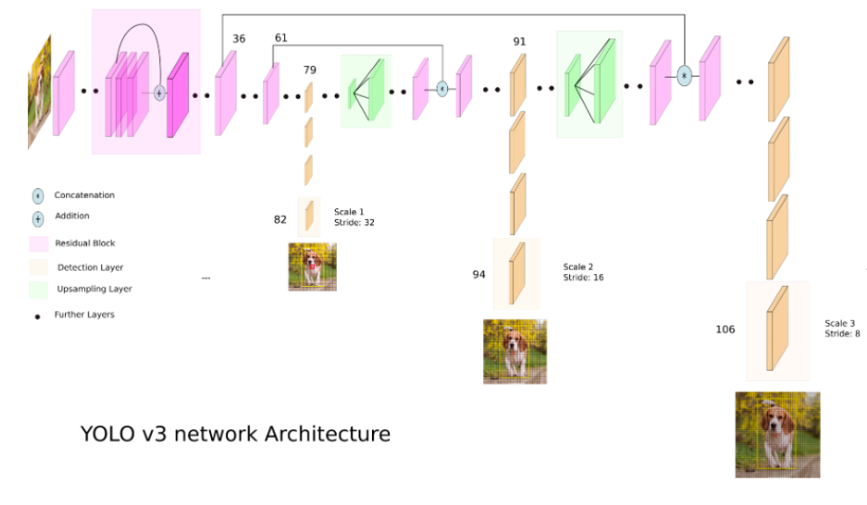
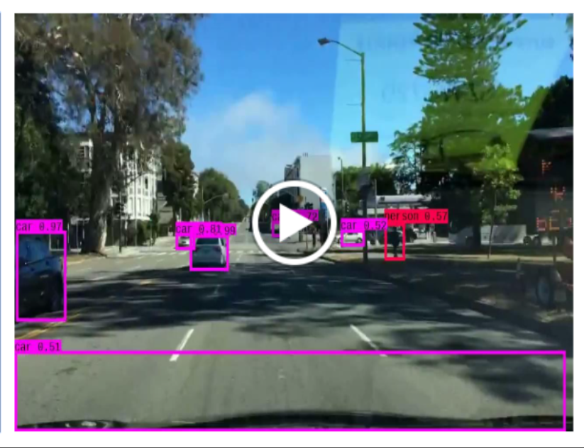
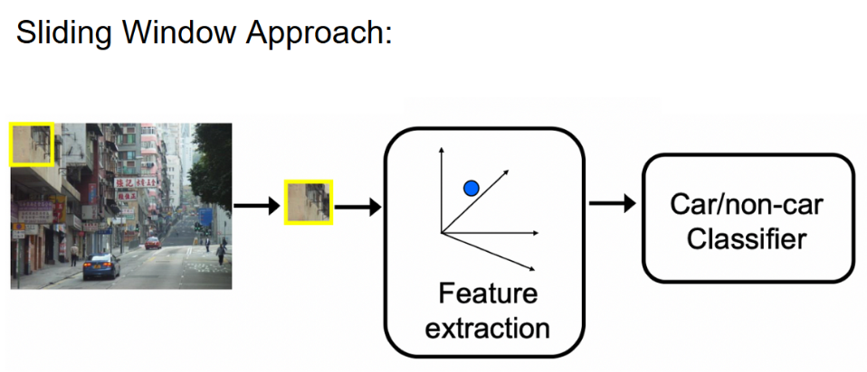

Developed a real-time video object detection model with confidence scoring for autonomous vehicles using YOLO — covering sliding windows, IoU, NMS, Darknet inputs, and the model's output and final results.
The work was framed as a full presentation flow. We opened with the motivation behind the problem statement — why dense, real-time perception matters for self-driving — then walked through the sliding window approach as a baseline for localization. From there we built up the core ideas behind YOLO (You Only Look Once): IoU (Intersection over Union) for measuring how well predicted boxes overlap with ground truth, and NMS (Non-Max Suppression) for collapsing redundant detections down to a single confident box per object.
We then showed how an image is fed into the Darknet network — the convolutional backbone that performs YOLO — and walked through what one kind of raw YOLO output looks like: a tensor of bounding-box coordinates, objectness scores, and per-class probabilities at three detection scales. Finally, we demonstrated the results of our trained model on real driving footage, with live confidence scores for cars, pedestrians, and other road agents.
Built and presented as a final project during the Inspirit AI Scholars program in Fall 2023.